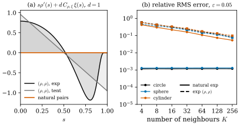

47.5 Natural Kernel Pairs
Goals
- natural kernel pair \(\xi = -s\rho'/n\)을 정의하고, 그 짝이 자동으로 정규화되며 \(C_\xi/C_\rho = d/n\)임을 보일 수 있다.
- 논문의 Taylor 전개 heuristic이 무엇을 보이고 무엇을 보이지 않는지 구분할 수 있다(상수항은 모든 pair에서 \(0\), NKP는 integrand까지 \(0\)).
- point cloud에서 natural pair가 강한 이유를 우리의 quadrature 분석으로 설명할 수 있다. curve에서는 이웃의 배치와 무관하게 상대 오차가 \((\varepsilon\kappa/2)^2\) 이하이고, surface에서는 이웃의 방향 distribution이 남는다.
Prerequisites
- Section 47.4: approximate mean curvature (47.4.3), Hypothesis 1(Definition 47.4.6), Figure 47.4.2
- Section 47.1: exp와 tent profile(Example 47.1.2)
- Track 2: surface를 graph로 쓴 국소 표현과 normal curvature(Chapter 39)
Motivation
Figure 47.4.2(b)에서 natural exp pair의 오차는 exp pair보다 \(10\)–\(200\)배 작았고, 두 수렴 정리가 주는 bound보다 훨씬 작았다. 정리들은 kernel pair를 고정하고 데이터의 근사 정도로 오차를 재므로 이 차이를 설명하지 못한다. 논문 §5는 이 질문, 곧 “어떤 pair가 더 좋은 rate를 주는가”를 다룬다. 논문 스스로 완전한 답은 아니라고 말하고, Taylor 전개에서 얻은 heuristic으로 특정한 pair를 제안한다. 이 절은 그 제안과 논거를 읽고, 논문에 없는 우리의 분석으로 그 pair가 왜 잘 되는지를 설명한다.
The Definition
논문은 \((\rho, \rho)\)가 자연스러워 보인다는 데서 시작한다. point cloud의 공식이 대수적으로 단순해지고, Brakke도 \(\rho = \xi\) = heat kernel profile을 썼다 [Brakke78]. 그러나 수치 수렴의 관점에서는 더 좋은 선택이 있다는 것이 논문의 주장이다.
Definition 47.5.1 (natural kernel pair). kernel pair \((\rho, \xi)\)가 Hypothesis 1을 만족하고
이면 natural kernel pair(자연 커널 쌍)라 하고, (NKP) 성질을 갖는다고 한다. [BLM17, Def 5.1, (5.1)]
\(\xi \ge 0\)이려면 \(\rho' \le 0\)이어야 한다. 논문의 Introduction은 NKP를 “\(\rho\)가 \([0, \infty)\)에서 단조감소이고 \(W^{2,\infty}\)이며 \(\xi = -t\rho'(t)/n\)”으로 소개하므로 단조성도 포함한 것으로 읽는다. \(\xi(0) = 0\)이므로 분모 \(\norm{V}*\xi_\varepsilon(x)\)에서 \(x\) 자신의 기여가 사라진다는 점도 기억해 두자(Exercise 47.1.3).
Proposition 47.5.2 (the natural partner is normalized and \(C_\xi/C_\rho = d/n\)). \(\rho\)가 \([0, 1]\) 밖에서 \(0\)이고 \(\rho(1) = 0\)인 \(C^1\) profile이며 \(\xi = -s\rho'/n\)이면, 모든 \(k \gt 0\)에 대해 \(\int_0^1\xi(s)s^{k-1}\,ds = \tfrac{k}{n}\int_0^1\rho(s)s^{k-1}\,ds\)이다. 따라서 (i) \(\rho\)가 \(\R^n\)에서 정규화되어 있으면(\(k = n\)) \(\xi\)도 같은 상수로 정규화되고, (ii) \(k = d\)에서 \(C_\xi/C_\rho = d/n\)이다.
Proof. 부분적분으로 \[ \begin{aligned} \int_0^1\xi s^{k-1}\,ds &= -\frac1n\int_0^1\rho'(s)s^k\,ds \\ &= -\frac1n\big[\rho s^k\big]_0^1 + \frac kn\int_0^1\rho s^{k-1}\,ds \end{aligned} \] 이고, boundary term은 \(\rho(1) = 0\)이므로 \(0\)이다. \(\square\)
논문은 §5 끝에서 같은 계산으로 \(C_{\rho,\xi} := C_\rho/C_\xi = n/d\)를 얻는다. 이 장의 예에서 \(n = 2\), \(d = 1\)이면 \(C_\xi/C_\rho = \tfrac12\)이고(Exercise 47.1.2), \(n = 3\), \(d = 2\)이면 \(\tfrac23\)이다. exp profile의 natural 짝은 \(C^\infty\)이므로 NKP다. tent profile의 natural 짝 \(\xi = c's/n\)은 (5.1)을 만족하지만 \(\rho_{\mathrm{tent}} \notin W^{2,\infty}\)이고 \(\xi\)가 \(s = 1\)에서 뛰므로 Hypothesis 1을 만족하지 않는다(Non-example 47.1.3). 논문은 그래도 이것을 “natural tent”로 실험에 쓴다.
Verification: verify/v-47-5-natural-kernel-pairs.py
The Heuristic Behind the Definition
논문의 논거를 순서대로 따라간다. \(C_{\rho,\xi} = \int_0^1\rho t^{d-1}\,dt/\int_0^1\xi t^{d-1}\,dt = C_\rho/C_\xi\)로 두고, \(C^3\) \(d\)-submanifold \(M\)의 \(V = v(M, 1)\)에서 \(\vec H^V_{\rho,\xi,\varepsilon}(x) - \vec H(x)\)를 Taylor 전개한다. 상수항은 Theorem 4.3 때문에 \(0\)이어야 한다. 그 상수항을 직접 계산해 보면 어떤 적분에 비례하는데, 그 적분이 \(0\)이 되는 방식에서 NKP가 나온다.
Step 1 (graph). \(0 \in M\), \(T_0M = \{(y, 0) : y \in \R^d\}\)로 두면 \(M\)은 국소적으로 \(u\colon A \to \R^{n-d}\)의 graph이고 \(u(0) = 0\), \(\nabla u(0) = 0\)이다. 따라서 \(u(y) = \tfrac12\inner{\nabla^2u(0)y}{y} + o(\abs{y}^2)\)이다((5.2)). normal basis \(\nu_1, \dots, \nu_{n-d}\)로 \(u = \sum_ju_j\nu_j\)라 쓰면 \(\vec H(0) = \sum_j\Delta u_j(0)\nu_j\)이다(principal curvature의 합 규약).
Step 2 (projection onto the tangent plane at \(x\)). \(x = (y, u(y)) \in M\)을 \(T_xM\)에 정사영한 vector는
이다((5.3)). normal 성분이 \(u(y) = \tfrac12\inner{D^2u\,y}{y}\)가 아니라 그 두 배라는 데 주의하자. 오타가 아니다. \(x\)의 tangent plane이 \(T_0M\)에 비해 \(\nabla u(y) \approx D^2u(0)y\)만큼 기울어 있어서, \(x\)를 그 plane에 정사영하면 normal 성분이 \(u(y)\)에 \(\inner{\nabla u(y)}{y} - u(y) \approx u(y)\)만큼 더해진다. 포물선 \(u = ky^2/2\)에서 수치로 확인하면 비가 \(1\)이다.
Step 3 (coarea and area formulas). 반지름 \(r\)의 sphere와 \(M\)의 교선을 \(T_0M\)에 정사영한 \(W_r = \{y : \abs{y}^2 + \abs{u(y)}^2 = r^2\}\)((5.4))는 \(d\)차원 sphere \(\Sigma_r = \{\abs{z} = r\}\)의 작은 변형 \(f_r(z) = (1 + \varphi_r(z))z\), \(\varphi_r = O(r^2)\)이다((5.5), (5.6)). 논문은
\[ \begin{aligned} &\frac{1}{C_{\rho,\xi}}\,\frac{\delta V*\rho_\varepsilon(0)}{\norm{V}*\xi_\varepsilon(0)} + \vec H(0) = \frac{A}{\varepsilon^nC_{\rho,\xi}\,\norm{V}*\xi_\varepsilon(0)}, \\ &A = \int_M\Big(\frac{\rho'(\abs{x}/\varepsilon)}{\varepsilon}\frac{x^M}{\abs{x}} \\ &\qquad\quad + C_{\rho,\xi}\,\xi\Big(\frac{\abs{x}}{\varepsilon}\Big)\vec H(0)\Big)\,d\mathcal{H}^d(x) \end{aligned} \]로 쓰고, coarea formula와 \(g_r(z) = (f_r(z), u(f_r(z)))\)에 대한 area formula, Jacobian \(Jg_r = 1 + O(r^2)\)((5.8), (5.9), \(d \ge 2\) 가정, \(d = 1\)이면 \(Jg_r = 1\)), \(\abs{x^M} = r(1 + O(r^2))\)을 써서 \(A\)를 \(\Sigma_r\) 위의 적분으로 옮긴다((5.7), (5.10)).
Proposition 47.5.3 (the constant term). \(A\)에서 \(O(r^2)\)와 \(O(r^3)\)를 포함하지 않는 부분을 \(A'\)이라 하면
이고, 이 적분은 모든 kernel pair에서 \(0\)이다. [BLM17, (5.10), (5.11)]
Proof sketch. \(z\)에 대해 홀수인 항은 \(\Sigma_r\)의 symmetry로 사라진다. \(D^2u_j(0)\)의 eigenvalue \(\lambda^j_h\)로 \(\inner{D^2u_j(0)z}{z} = \sum_h\lambda^j_hz_h^2\)이고 \(\int_{\Sigma_r}z_h^2\,d\mathcal{H}^{d-1} = \omega_dr^{d+1}\), \(\sum_h\lambda^j_h = \Delta u_j(0)\), \(\mathcal{H}^{d-1}(\Sigma_r) = d\omega_dr^{d-1}\)을 넣고 \(s = r/\varepsilon\)로 바꾸면 (47.5.3)이다. 적분이 \(0\)인 것은 부분적분 \(\int_0^1s\rho's^{d-1}\,ds = -d\int_0^1\rho s^{d-1}\,ds\)와 \(C_{\rho,\xi}\)의 정의 \(\int\rho s^{d-1} = C_{\rho,\xi}\int\xi s^{d-1}\)에서 나온다. \(\square\)
여기서 논문은 한 걸음 더 나아간다. 적분이 \(0\)인 것에 더해 integrand가 \(0\)이기를 요구하면
이다((5.12)). 이것은 \(C_{\rho,\xi}\)의 정의와 모순되지 않고(부분적분으로 확인된다), 두 profile이 \(\R^n\)에서 같은 상수로 정규화된다는 조건과 합치면 \(C_{\rho,\xi} = n/d\)가 되어 (5.12)는 (5.1)과 동치다. 이것이 NKP의 유래다.
Figure 47.5.1(a)가 이 차이를 보여 준다. \((\rho, \rho)\) pair(\(C_{\rho,\rho} = 1\), \(d = 1\))의 integrand \(s\rho' + \rho\)는 exp에서 \(s = 0\)의 \(0.789\)부터 \(s \approx 0.8\)의 \(-1.18\)까지 움직이고, 위아래 넓이가 같아 적분만 \(0\)이다. natural pair에서는 integrand가 모든 \(s\)에서 \(0\)이다.
Verification: verify/v-47-5-natural-kernel-pairs.py
Why Natural Pairs Work on Point Clouds (Our Analysis)
논문은 NKP의 효과를 실험으로만 보인다. “모든 실험에서 수렴과 강건성이 크게 좋아졌다, noise가 있어도”라는 것이 논문의 말이다. 아래는 논문에 없는 우리의 분석이다. 핵심은 연속 적분에서 \(0\)이던 것이 point cloud에서는 이웃에 대한 합, 곧 quadrature가 된다는 것이다. 적분이 \(0\)이어도 합은 \(0\)이 아닐 수 있지만, integrand가 점마다 \(0\)이면 합도 \(0\)이다.
Proposition 47.5.4 (exact cancellation on a circle; ours). 반지름 \(R\)(\(\kappa = 1/R\))인 circle 위의 점 \(x\)와 원자 \((x_j, P_j, m_j)\)(\(x_j\)는 circle 위, \(P_j\)는 정확한 tangent line, \(m_j \gt 0\)은 아무 값)를 생각하자. \(x_j\)의 중심각을 \(\phi_j\), \(t_j = \abs{x_j - x}/\varepsilon\)이라 하자. natural pair(\(n = 2\), \(d = 1\))이면, \(B_\varepsilon(x)\) 안에 \(\xi(t_j) \gt 0\)인 원자가 하나라도 있는 한
이다(\(c\)는 중심). 따라서 이웃의 개수, 위치, mass와 무관하게 \(0 \le \kappa - \abs{\vec H^{V,\perp}(x)} \le \kappa\,(\varepsilon\kappa/2)^2\)이다.
Proof. \(x = (R, 0)\), \(x_j = R(\cos\phi_j, \sin\phi_j)\)로 두면 chord 방향은 \(u_j = (-\sin\tfrac{\phi_j}2, \cos\tfrac{\phi_j}2)\), \(x_j\)의 tangent는 \(T_j = (-\sin\phi_j, \cos\phi_j)\)이므로 \(P_ju_j = \inner{u_j}{T_j}T_j = \cos\tfrac{\phi_j}2\,T_j\)이다. 그 \(e_1\)(바깥 normal) 성분은 \(-\cos\tfrac{\phi_j}2\sin\phi_j\)이고, \(\sin\phi_j = 2\sin\tfrac{\phi_j}2\cos\tfrac{\phi_j}2 = \tfrac{\varepsilon t_j}{R}\cos\tfrac{\phi_j}2\)이다. 여기서는 \(\phi_j \gt 0\)으로 두었다. \(\phi_j \lt 0\)이면 \(u_j\)의 부호가 바뀌고 \(\sin\phi_j = -\tfrac{\varepsilon t_j}{R}\cos\tfrac{\phi_j}2\)이 되어 두 부호가 상쇄되므로, 아래의 normal 성분은 같다. (47.4.3)의 normal 성분은
\[ \begin{aligned} &-\frac{C_\xi}{C_\rho}\,\frac1\varepsilon\,\frac{\sum_jm_j\rho'(t_j)\big(-\tfrac{\varepsilon t_j}{R}\cos^2\tfrac{\phi_j}2\big)}{\sum_jm_j\xi(t_j)} \\ &= \frac{C_\xi}{C_\rho}\,\kappa\,\frac{\sum_jm_j\,t_j\rho'(t_j)\cos^2\tfrac{\phi_j}2}{\sum_jm_j\xi(t_j)} \end{aligned} \]이다. NKP이면 점마다 \(t_j\rho'(t_j) = -n\xi(t_j)\)이고 \(C_\xi/C_\rho = d/n\)이므로 앞의 coefficient가 \(-\tfrac dn\cdot n\kappa = -\kappa\)가 되어 (47.5.5)이다. \(\abs{x_j - x} = 2R\sin\tfrac{\abs{\phi_j}}2 \lt \varepsilon\)이므로 \(1 - \cos^2\tfrac{\phi_j}2 = \sin^2\tfrac{\phi_j}2 \lt (\varepsilon/2R)^2\)이고, 가중평균도 같은 범위에 있다. \(\square\)
이 명제가 말하는 것은 이렇다. \((\rho, \rho)\) pair의 normal 성분은 \(\kappa\sum m_jt_j\rho'(t_j)\cos^2(\cdot)/\sum m_j\rho(t_j)\)로, 서로 다른 두 함수 \(t\rho'(t)\)와 \(\rho(t)\)의 가중합의 비다. 이 비가 \(-1\)에 가까우려면 두 합이 각각의 적분을 잘 근사해야 하고, 그러려면 이웃이 많고 고르게 놓여야 한다. 게다가 \(x\) 자신이 분모에 \(m\rho(0)\)을 더한다. natural pair에서는 분자의 각 항이 분모의 대응하는 항의 정확히 \(-n\cos^2(\phi_j/2)\)배이므로, 합이 적분을 근사하든 말든 비가 맞는다. 이웃이 두 개뿐이어도, mass가 엉망이어도 된다. 남는 오차 \(\cos^2(\phi_j/2)\)는 curvature가 \(\varepsilon\)-ball 안에서 보이는 기하적 효과로 \(\varepsilon^2\) 크기다. 이것은 \(\vec H^{V,\perp}\)(또는 \(\vec H^V\)의 normal 성분)에 대한 것이다. \(\vec H^V\)의 tangential 성분은 이웃이 symmetric하게 놓여야만 상쇄되므로 natural pair도 보호하지 못한다.
Verification: verify/v-47-5-natural-kernel-pairs.py (임의의 이웃 수, 위치, mass로 200번)
Remark 47.5.5 (surfaces: the angular distribution remains; ours). \(d = 2\)이면 같은 계산의 첫 order에서 \(P_ju_j\)의 normal 성분은 \(\varepsilon t_j\,k(\theta_j)\)이다. \(\theta_j\)는 \(x\)에서 본 이웃의 방향, \(k(\theta) = \inner{A\theta}{\theta}\)는 그 방향의 normal curvature다. NKP이면 반지름 방향의 가중이 위와 똑같이 약분되어 추정치는 \(d\cdot\big(\sum_jm_j\xi(t_j)k(\theta_j)/\sum_jm_j\xi(t_j)\big)\), 곧 이웃 방향에 대한 normal curvature의 \(\xi\)-가중평균의 \(d\)배가 된다. 이웃의 방향이 고르면 \(2\cdot\tfrac{k_1 + k_2}{2} = k_1 + k_2\)로 맞다. sphere처럼 모든 방향의 normal curvature가 같으면 방향 distribution과 무관하게 맞는다. cylinder처럼 방향에 따라 다르면 방향 distribution의 quadrature 오차가 남는다. 극단적으로 반지름 \(0.5\)인 cylinder에서 이웃이 둘레 방향에만 있으면 추정치는 \(2\times2 = 4\)(정답 \(2\)), 축 방향에만 있으면 \(0\)이다.
Verification: verify/v-47-5-natural-kernel-pairs.py
Figure 47.5.1(b)가 이 두 명제를 Monte Carlo로 확인한다. \(\varepsilon = 0.05\)인 ball 안에 이웃 \(K\)개를 무작위로 뿌리고(\(x\) 자신 포함, 같은 mass, 정확한 plane) normal 성분의 상대 RMS 오차를 쟀다. circle과 sphere에서 natural exp는 \(K = 4\)부터 \(256\)까지 \(0.0012\), \(0.0013\)으로 일정하다. 남는 것은 \(\varepsilon^2\) 크기의 기하적 bias뿐이다. exp \((\rho, \rho)\)는 circle에서 \(K = 4\)일 때 \(0.59\), \(K = 256\)일 때 \(0.083\)으로, Monte Carlo 적분처럼 천천히 줄어든다. cylinder에서는 natural exp도 \(0.42\)에서 \(0.054\)로, 기울기 \(-\tfrac12\)로 줄어든다. 방향 distribution의 Monte Carlo 오차다.

이 분석은 Section 47.7에서 볼 논문의 두 관찰을 설명한다. 첫째, Fig. 4(a)처럼 ball 안의 이웃 수를 고정하고 \(N\)을 늘리면 natural pair만 계속 수렴하고 \((\rho, \rho)\) pair는 정체한다. 이웃 수가 고정되면 quadrature 오차가 줄지 않기 때문이다. 둘째, 매끄럽지 않은 natural tent가 natural exp만큼 잘 된다. 위의 약분은 \(\rho\)의 smoothness가 아니라 \(\xi = -s\rho'/n\)이라는 관계만 쓰기 때문이다. 논문은 이것을 “NKP가 smoothness보다 더 효과적”이라고만 적는다.
Summary
- natural kernel pair는 \(\xi = -s\rho'/n\)이고(Definition 47.5.1), 짝이 자동으로 정규화되며 \(C_\xi/C_\rho = d/n\)이다(Proposition 47.5.2).
- 논문의 heuristic: smooth surface에서 오차의 상수항은 모든 pair에서 \(0\)인 적분 \(\int(s\rho' + dC_{\rho,\xi}\xi)s^{d-1}\)에 비례하고, NKP는 그 integrand까지 \(0\)으로 만든다(Proposition 47.5.3). rate의 개선을 증명한 것은 아니다.
- 우리의 분석: point cloud에서는 적분이 합이 되므로, integrand가 점마다 \(0\)이라는 것이 결정적이다. circle에서 natural pair의 \(\vec H^{V,\perp}\)는 이웃의 배치와 mass에 무관하게 상대 오차 \((\varepsilon\kappa/2)^2\) 이하이고(Proposition 47.5.4), surface에서는 이웃의 방향 distribution에 따른 오차가 남는다(Remark 47.5.5, Figure 47.5.1).
다음 절에서는 논문 §6과 §7을 읽는다. rectifiable varifold를 volumetric과 point cloud varifold로 근사할 때의 거리(Theorem 6.4), 그리고 mesh의 cotangent formula가 polyhedral varifold의 first variation을 hat function에 쓴 값이라는 사실(Proposition 7.1)을 본다.
Quick check
Exercise 47.5.1 ★ exp profile의 natural 짝을 \(n = 3\)에서 정규화하면 \(\rho\)와 같은 상수로 정규화되는가? \(d = 2\)에서 \(C_\xi/C_\rho\)는 얼마인가?
Solution
Proposition 47.5.2에서 \(k = n = 3\)이면 \(\int_0^1\xi s^2\,ds = \int_0^1\rho s^2\,ds\)이므로 같은 상수로 정규화된다. \(k = d = 2\)이면 \(\int_0^1\xi s\,ds = \tfrac23\int_0^1\rho s\,ds\)이므로 \(C_\xi/C_\rho = 2/3\)이다.
Verification: verify/v-47-5-natural-kernel-pairs.py
Exercise 47.5.2 ★ 포물선 \(u(y) = ky^2/2\) 위의 점 \(x = (y, u(y))\)를 그 점의 tangent line에 정사영한 vector \(x^M\)의 normal(\(e_2\)) 성분을 \(y\)의 2차까지 구하고, (47.5.2)와 비교하여라.
Solution
unit tangent는 \(T = (1, ky)/\sqrt{1 + k^2y^2}\)이고 \(\inner{x}{T} = (y + k^2y^3/2)/\sqrt{1 + k^2y^2}\)이므로 \(x^M = \inner{x}{T}T\)의 \(e_2\) 성분은 \(\inner{x}{T}\,ky/\sqrt{1 + k^2y^2} = ky^2 + O(y^4)\)이다. 이것은 \(\inner{D^2u(0)y}{y} = ky^2\)과 같고, \(u(y) = ky^2/2\)의 두 배다.
Verification: verify/v-47-5-natural-kernel-pairs.py
Exercise 47.5.3 ★★ Proposition 47.5.4의 상황에서 \((\rho, \rho)\) pair를 쓰고 이웃이 \(x\) 자신과 \(\phi = \pm\phi_1\)의 두 점뿐이라 하자(mass는 모두 \(m\)). normal 성분의 추정치를 \(\kappa\), \(t_1 = \abs{x_1 - x}/\varepsilon\), \(\rho\)로 쓰고, \(\phi_1\)이 작을 때 정답 \(\kappa\)와 얼마나 다른지 말하여라.
Solution
위의 계산에서 \(C_\xi/C_\rho = 1\)이고, 분자는 두 이웃의 \(2m\,t_1\rho'(t_1)\cos^2\tfrac{\phi_1}2\), 분모는 \(x\) 자신을 포함해 \(m\rho(0) + 2m\rho(t_1)\)이다. 따라서 추정치의 크기는 \(\kappa\cdot\dfrac{-2t_1\rho'(t_1)\cos^2(\phi_1/2)}{\rho(0) + 2\rho(t_1)}\)이다. \(\phi_1\)이 작으면 \(\cos^2 \approx 1\)이고, 비 \(-2t_1\rho'(t_1)/(\rho(0) + 2\rho(t_1))\)는 exp profile에서 \(t_1\)에 따라 \(0\)(\(t_1 \to 0\))부터 최대 \(2.56\)(\(t_1 \approx 0.82\))까지 움직인다. 이웃이 어디 있느냐에 따라 추정치가 정답의 \(0\)배에서 \(2.5\)배까지 된다. 정답과의 차이는 \(\varepsilon\)이 작아져도 줄지 않는다. natural pair에서는 \(x\) 자신의 항이 \(\xi(0) = 0\)으로 사라지고 비가 정확히 \(\cos^2(\phi_1/2)\)이다.
Verification: verify/v-47-5-natural-kernel-pairs.py
Exercise 47.5.4 ★ 반지름 \(0.5\)인 cylinder 위의 점에서, \(\varepsilon\) 안의 이웃이 모두 둘레 방향(축에 수직인 원) 위에 있으면 natural pair의 추정치는 얼마인가? 모두 축 방향 위에 있으면? 정답은 \(2\)이다.
Solution
Remark 47.5.5에서 추정치는 \(d\langle k(\theta_j)\rangle_\xi\)이다. 둘레 방향의 normal curvature는 \(1/0.5 = 2\)이므로 \(2\times2 = 4\)(수치로 \(3.995\)), 축 방향은 \(0\)이므로 \(0\)이다. 이웃이 한 방향에 몰리면 정답의 두 배나 \(0\)이 나온다.
Verification: verify/v-47-5-natural-kernel-pairs.py